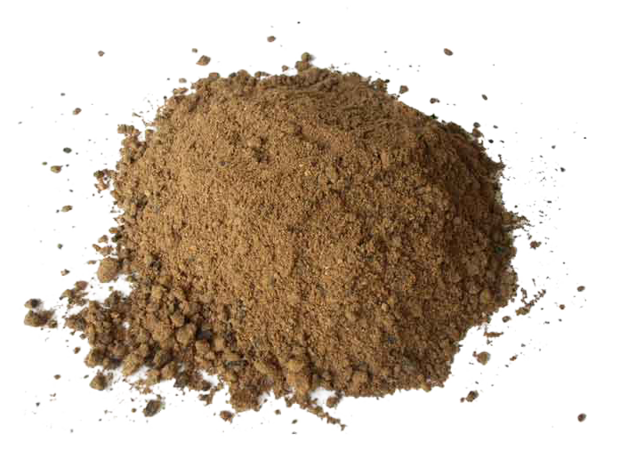

Buy Palm Kernel Expeller Cake Meal Wholesale for Sale
HS Code:
230660 Of palm nuts or kernels
Palm Kernel Cake (PKC), also known as Palm Kernel Expeller (PKE), is a high-value by-product derived from the mechanical pressing of palm kernels to extract vegetable oil.

Rich in protein (14–18%), fiber (12–20%), and essential minerals such as phosphorus, magnesium, and calcium
Palm kernel expeller cake is an economical and sustainable animal feed concentrate that supports optimal animal nutrition across multiple livestock sectors.
Palm kernel expeller cake commonly used in formulations for beef feed, feed for cattle, dairy cows, dairy cattle, bulk goat feed, sheep and poultry, and chicken feed.
Palm kernel expeller cake balanced nutrient profile makes it a valuable ingredient in livestock and poultry feed and blend feed production, helping farmers improve animal growth, milk yield, and overall productivity efficiently.
Palm kernel for cows and other livestock offers improved digestion and weight gain performance.
Beyond feed applications, the residual meal can also be utilized as organic fertilizer and renewable biomass fuel, enhancing its value in sustainable agriculture and energy sectors.
Get Premium Palm Kernel Expeller Cake Meal for Sale
Are you looking for a reliable Indonesia bulk wholesale manufacturer and supplier of Palm Kernel Expeller Cake (PKE / PKC) Meal for your needs, whether in small or large quantities and across various types?You’ve come to the right place! Contact us at OneWholesaleIndo.com, and we will be happy to provide the right solution tailored to your needs.
Palm Kernel Expeller Cake Meal Uses:
Cattle Feed
- Function: High in digestible fiber and energy, palm kernel expeller cake meal widely used in dairy and beef rations to enhance milk yield and support healthy weight gain.
- How to Use: Mix it into cattle feed rations at recommended inclusion rates (typically 10–30%) as a supplement to grass, silage, or concentrate feed.
Poultry Feed
- Function: Palm kernel expeller cake meal provides supplemental energy and protein in chicken feed formulations.
- How to Use: Include in controlled amounts (usually below 10%) to balance nutrition without affecting palatability.
Sheep & Goat Feed
- Function: Palm kernel expeller cake meal valuable source of energy and protein, improving rumen health and productivity in small ruminants.
- How to Use: Blend into feed rations (10–20%) along with forage to enhance growth and milk production.
Aquaculture Feed
- Function: Palm kernel expeller cake meal supplies fiber and nutrients when processed into balanced fish and shrimp feed.
- How to Use: Processed into pellet form and combined with other protein-rich ingredients to ensure a complete aquafeed formulation.
Organic Fertilizer
- Function: Palm kernel expeller cake meal acts as a natural soil conditioner, improving fertility and sustainability in agriculture.
- How to Use: Apply residual meal directly to soil or mix with compost for organic farming applications.
Biomass Fuel
- Function: Palm kernel expeller cake meal can be alternative renewable energy source for industrial boilers and power generation.
- How to Use: Dried and compressed into pellets or briquettes to be burned as biomass fuel.
Indonesia Palm Kernel Expeller Cake Meal for Sale
Indonesia is one of the world’s largest palm oil producers, supported by its vast plantations and favorable tropical climate that ensure sustainable palm kernel production.This strong supply base allows Indonesia to be a reliable exporter of Palm Kernel Expeller (PKE) Cake Meal for global animal feed industries.
Indonesian palm kernel cake is valued for its high fiber content and protein levels of around 14–18%, making it an excellent source of nutrition for cattle, dairy cows, sheep, goats, and poultry.
It is widely used as a cost-effective feed ingredient to support livestock growth, milk production, and overall health.
With bulk supply options in both mash and pellet forms, Indonesia consistently delivers stable quality Palm Kernel Expeller Meal to meet the diverse requirements of international feed markets.